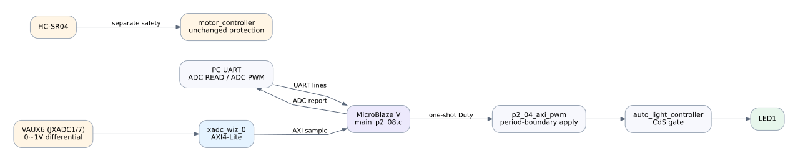
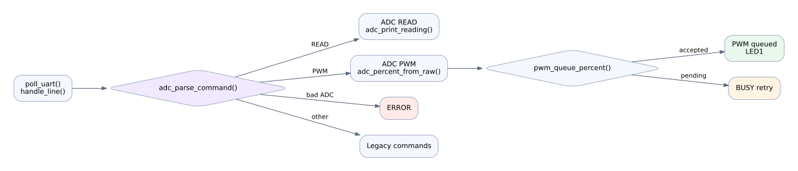

1. 기능 개요와 기존 장 연계
목표: Basys3 JXADC VAUX6의 아날로그 전압을 읽고, UART ADC READ로 확인한 뒤 ADC PWM으로 기존 LED1 PWM Duty를 한 번 갱신한다.

| 사용자 명령 | 실제 동작 |
|---|---|
| 사용자 명령 | 실제 동작 |
| `ADC READ` | 현재 VAUX6 변환 결과 레지스터, 전압 mV, PWM 참고값 출력 |
| `ADC PWM` | 현재 샘플 값을 LED1 PWM 설정으로 단 한 번 반영 |
| `PWM 50` | 기존 04장 수동 Duty 명령 유지 |
| `AUTO ON`/`AUTO OFF` | 기존 CdS 자동 조명 게이트 유지 |
| `MOTOR FWD`/`STOP` | 기존 초음파 근접 정지 규칙 유지 |
| `STATUS` | 기존 항목과 XADC 정보 함께 출력 |
2. 데이터 경로·레지스터와 명령

| 항목 | 주소/범위 | 의미 |
|---|---|---|
| 항목 | 주소/범위 | 의미 |
| XADC VAUX6 | XADC_BASEADDR + 0x258 | AMD XADC Status Register / 12-bit 값은 비트 [15:4] |
| ADC RAW12 | 0~4095 | 단극성 0~1V 입력에 대응하는 12비트 코드 |
| ADC mV | 0~약 1000 | 표시용 정수 환산, 실제 측정 정확도를 보증하지 않음 |
| PWM 설정 | P2_04_PWM_BASEADDR | 04장 기존 IP의 PERIOD/DUTY/CTRL/APPLY 사용 |
| FND | 기존 03/06장 | XADC 전압은 FND 대신 UART에 표시해 자리별 의미 충돌을 방지 |
03. 사전 조건과 프로젝트 확인
07장 코드와 사용자 Top·AXI 연결을 그대로 사용한다.
Vivado → File → Open Project
Home → soc → hw → soc_ip_design_07 → soc_ip_design_07.xpr를 연다.
BD의 MicroBlaze V, GPIO, UART, Timer, INTC, 01~07장 IP가 등록됨
동작 원리: 07장 실습을 완료하지 않았다면 프로젝트가 아직 없을 수 있으며, 이 단계는 07장 실습 완료 후 수행한다.
오류 시: 이전 프로젝트 미존재 → 07장 실제 구현부터 진행. 교재 파일 존재를 실습 완료로 오인 금지.
04. 08장 독립 프로젝트 복제
원본 07장과 01장 성공 기록을 보존한다.
Vivado → File → Project → Save As
프로젝트 이름 soc_ip_design_08, 저장 경로 Home → soc → hw/로 저장한다.
08장 soc_ip_design_08.xpr 생성, 07장 XPR은 그대로 존재
동작 원리: 장별 프로젝트 분리는 AXI IP 새 추가 시 원본 데이터 훼손을 막는다.
오류 시: Save As 후 XPR 파일·BD·Top의 소스 경로가 이전 폴더를 공유하지 않는지 확인.
05. Block Design 열기
기존 SoC 주소 맵과 버스를 보존한다.
Flow Navigator → IP INTEGRATOR → Open Block Design
soc11_integration.bd를 연다.
MicroBlaze·AXI interconnect·기존 IP 연결이 유지
동작 원리: 새 XADC는 CPU가 AXI4-Lite로 읽는 주변장치이므로 기존 SoC 버스에 추가한다.
오류 시: 블록이 누락된 경우 복제 프로젝트 소스 참조 오류 확인.
06. XADC Wizard 검색 및 추가
AMD 제공 XADC 하드 매크로 접근 IP를 재사용한다.
Block Design → + Add IP
XADC Wizard를 검색·추가해 인스턴스 이름을 xadc_wiz_0로 확인한다.
XADC IP 블록이 BD에 추가되고 AXI 포트 설정을 선택 가능
동작 원리: 사용자 RTL로 12비트 ADC를 재구현하지 않고 FPGA 내부 XADC를 사용한다.
오류 시: 검색 결과에 없으면 Basys3 Artix-7 파트와 IP Catalog 필터 확인.
07. XADC 기본 설정
CPU의 32비트 읽기 인터페이스가 필요하다.
Double click xadc_wiz_0 → Basic
Interface Options를 AXI4-Lite, Timing Mode를 Continuous로 선택한다.
심벌에 s_axi_lite와 s_axi_aclk·리셋 관련 포트 표시
동작 원리: AXI4-Lite는 XADC 변환 결과를 메모리 주소를 통해 CPU에 제공한다.
오류 시: 자동 생성 심벌/GUI 명칭은 2024.2에서 실제 확인하고 다른 경우 기록.
08. 채널과 입력 모드 설정
Basys3 JXADC의 한 채널을 안전하게 사용한다.
XADC Wizard → ADC Setup / Single Channel
Startup Channel Selection을 Single Channel, 측정 채널 VAUXP6/VAUXN6, Unipolar를 선택한다.
Channel VAUX6 선택과 차동 단극성(0~1V) 확인
동작 원리: JXADC1(J3) P핀과 JXADC7(K3) N핀을 한 쌍으로 사용한다.
오류 시: 자동 온칩 온도 채널만 켜지지 않았는지 Summary 확인.
09. XADC IP 설정 확정
선택한 채널과 AXI 인터페이스를 확정한다.
XADC Wizard → Summary → OK
AXI4-Lite, VAUX6, Continuous, Unipolar 목록을 점검하고 OK를 누른다.
Vaux6 아날로그 인터페이스와 AXI Slave 포트 확인
동작 원리: GUI에 따라 외부 핀 이름은 vauxp6/vauxn6 또는 인터페이스로 묶여 표시될 수 있다.
오류 시: 실제 포트 구성과 달라졌을 때 Top을 억지로 연결하지 말고 먼저 기록.
10. AXI 연결 자동화
MicroBlaze가 XADC를 메모리맵으로 읽도록 연결한다.
Block Design → Run Connection Automation
XADC s_axi_lite를 MicroBlaze 쪽 AXI master/interconnect로 연결한다.
XADC AXI Slave가 연결되고 주소 범위가 Address Editor에 나타남
동작 원리: CPU C 코드는 해당 주소의 +0x258 레지스터를 읽는다.
오류 시: 인터커넥트 포트가 부족하면 Automation이 연결 수를 확장하는지 확인.
11. Clock·Reset 연결
AXI 통신의 타이밍과 리셋을 맞춘다.
Block Design → XADC s_axi_aclk / s_axi_aresetn
기존 SoC AXI Clock과 같은 도메인의 Clock·정합된 Active-Low Reset에 연결한다.
Validate Design에서 누락된 Clock/Reset 경고 없음
동작 원리: 새 주변장치가 기존 CPU AXI 버스와 동일 클록 도메인에서 동작해야 한다.
오류 시: 외부 clk와 버스 Clock을 무작정 직결하지 말고 실제 BD Clocking Wizard 경로를 따른다.
12. Vaux6 외부화
보드 JXADC 물리 포트까지 통로를 만든다.
Block Design → xadc_wiz_0 → Vaux6
Vaux6에 Make External을 실행하고 BD 외부 차동 포트의 실제 RTL 이름을 확인한다.
생성 Wrapper에 vauxp6/vauxn6가 노출되거나 실제 다른 명칭이 나타남
동작 원리: Top 포트 선언과 자동 생성 Wrapper 포트 이름은 정확하게 일치해야 한다.
오류 시: 포트 이름이 다르면 실제 생성 Wrapper 선언부를 근거로 사용자 Top만 최소 수정.
13. AXI 주소 확인
실제 프로젝트에서 충돌 없는 새 주소를 확보한다.
IP INTEGRATOR → Address Editor
XADC 주소를 자동 할당하고 실제 Base Address와 범위를 기록한다.
기존 01~07장 주소와 겹치지 않음. 주소는 이 문서에서 고정하지 않음
동작 원리: Vitis C의 P2_08_XADC_BASEADDR 값은 생성 BSP 주소에 맞춰야 한다.
오류 시: 주소 자동 할당이 안 되면 Address Editor의 Unmapped Segments 확인.
14. BD 유효성 검사와 Wrapper 재생성
Vivado가 최종 인터페이스 선언을 생성하도록 한다.
Block Design → Validate Design → Generate Output Products
Validate → 우클릭 BD → Generate Output Products → Create HDL Wrapper에서 Vivado 관리 선택한다.
soc11_integration_wrapper.v에 새 VAUX6 포트가 포함됨
동작 원리: Wrapper 자동 생성 파일은 사용자가 직접 수동 편집하지 않는다.
오류 시: BD 설정을 바꾼 뒤 반드시 Wrapper 재생성하고 포트 순서를 다시 확인.
15. 사용자 Top 연결 추가
Top에는 순수 연결만 추가한다.
Sources → Design Sources → 사용자 Top
제공 Top 파일을 08장 복제본에 등록. vauxp6/vauxn6 포트를 연결한다.
기존 LED/UART/FND/모터 연결 유지, Top에 always/FSM 없음
동작 원리: Top은 XADC 아날로그 핀과 BD 연결만 담당하고 12비트 계산은 C에서 처리한다.
오류 시: 실제 Wrapper가 다른 포트명을 갖고 있다면 08장 Top만 수정.
16. XDC 및 아날로그 핀 검사
XADC 핀에 잘못된 디지털 IOSTANDARD를 적용하지 않는다.
Constraints → 기존 XDC + Package/Implementation Checks
JXADC1 J3, JXADC7 K3에 해당하는 XADC 아날로그 채널인지 확인한다.
아날로그 VAUX6 핀 사용, 다른 JA/JB/JC 자원과 중복 없음
동작 원리: XADC 아날로그 포트는 일반 디지털 GPIO 제약과 다르게 다뤄야 한다.
오류 시: 아날로그 포트에 LVCMOS33를 무작정 추가하지 말고 UG480·생성 핀 배치를 대조.
17. 합성·배치배선·Timing
코드와 핀·타이밍의 실제 구현 가능성을 확인한다.
Flow Navigator → Run Synthesis → Run Implementation
합성 및 구현 수행 후 Utilization, Timing Summary, DRC, Critical Warning을 기록한다.
실제 WNS/TNS·DRC·XADC 배치 확인
동작 원리: 합성 결과에서 자원과 Timing을 확인한다.
오류 시: XADC 핀 잠금·클록 덮어쓰기·아날로그/디지털 충돌 경고의 원인을 해소.
18. XSA 내보내기
Vitis에서 최신 새 XADC 주소를 알게 한다.
File → Export → Export Hardware
실제 빌드 완료 후 Bitstream 포함 XSA를 Export한다.
08장 Hardware Platform용 XSA 및 Bitstream 기록
동작 원리: 이전 07장 XSA를 사용하면 XADC 주소가 없으므로 반드시 새 하드웨어 반영.
오류 시: XSA 안의 IP 주소와 현재 BD Address Editor를 다시 확인.
19. Vitis 플랫폼 갱신
새 XADC가 BSP에 나타나도록 한다.
Vitis 2024.2 → Platform Component
08장 신규 플랫폼을 만들거나 플랫폼의 XSA를 교체한 후 BSP 재생성/Build한다.
XADC Base Address와 UART/INTC 주소 관련 정의가 xparameters.h 등에 생성
동작 원리: BSP의 SDT/Classic에 따라 IRQ 설정 API가 다르므로 전 단계의 기존 구현을 유지.
오류 시: XADC 매크로가 없다면 XSA 반영·XADC AXI Interface 노출 여부 확인.
20. C 소스 08장 버전 등록
기존 07장 C 명령을 보존하면서 ADC만 확장한다.
Vitis → Application Component → Sources
main_p2_08.c, p2_08_adc_logic.c 및 재사용 보조 C를 등록한다.
C 주 함수는 main_p2_08.c의 main 하나만
동작 원리: 07장 파일은 백업으로만 두고 두 개의 main()을 같은 Application에 추가하지 않는다.
오류 시: 중복 main 링크 오류 → 07장 이전 main 파일을 Build Sources에서 제외.
21. 실제 AXI 주소·인터럽트 설정
임의 주소를 컴파일하지 못하도록 한다.
Vitis → BSP xparameters.h / C Definitions
P2_01~P2_08_*_BASEADDR, P2_03_BTN_INTR_ID, SDT 또는 Classic IRQ 인자를 실제 값으로 지정한다.
미설정 시 #error, 설정 시 빌드 가능
동작 원리: 주소 충돌과 가짜 기본값 사용을 컴파일 단계에서 차단한다.
오류 시: 경고를 지우려고 주소를 추측하지 않는다. 문서의 테스트용 0x43C... 주소는 실물 설정값이 아니다.
22. UART 테스트 준비
터미널 명령은 문자열 한 줄 단위로 실행한다.
PC → moserial/minicom
115200 baud, 8N1, Flow Control OFF, Enter(CR/LF)로 준비한다.
부팅 메시지 P2-08 및 명령 목록 출력
동작 원리: 단일 문자 1/0/r가 아니라 ADC READ를 한 줄로 입력한다.
오류 시: 깨진 문자는 115200·UART 핀/케이블·터미널 설정 확인.
23. 외부 아날로그 입력 안전 배선
3.3V 신호가 XADC 아날로그 핀에 직접 들어가지 않도록 한다.
Basys3 JXADC, 전원 OFF 상태
10k 가변저항(3.3V-GND) 출력 → 27k 직렬 → JXADC1(P); JXADC1(P)→10k→GND; JXADC7(N)→GND. 전원 투입 전 전압 측정.
분압 P-N 차동 전압은 0~약 0.892V, P·N 극성 확인
동작 원리: 3.3 × 10/(27+10) ≈ 0.892V. 이는 0~1V 단극성 범위 이내로 설계한 값이다.
오류 시: 저항값/배선을 멀티미터로 확인하지 못했다면 FPGA에 연결하지 않는다.
24. ADC READ로 전압 확인
아날로그 변환 결과의 숫자적 의미를 확인한다.
UART 터미널 → 명령 입력
ADC READ 입력 후 가변저항을 조금 바꾸고 다시 읽는다.
ADC AUX6 RAW=... MV=... PWM_REF=...% 형태. 값은 실제 연결 전까지 미정
동작 원리: [15:4] 상위 12비트에서 ADC 결과를 추출하며 mV로 표시한다.
오류 시: 읽기 레지스터는 최신 샘플 완료를 C가 확인하지 않으므로 초기값을 유효 전압으로 단정 금지.
25. ADC PWM으로 LED1 갱신
04장 PWM에 ADC 측정값을 단 한 번 반영한다.
UART 터미널 → 명령 입력
ADC PWM 입력 후 STATUS를 조회한다.
OK ADC PWM NN% QUEUED 또는 Pending 중이면 BUSY
동작 원리: 실제 Duty는 04장 PWM Core가 다음 주기 경계에서 반영. AUTO ON이면 CdS 게이트가 LED1을 끌 수 있다.
오류 시: BUSY면 뒤이어 다시 명령. 센서가 변해도 ADC PWM을 다시 실행하기 전에는 Duty가 자동 추종하지 않음.
26. 모터·FND·기존 기능 회귀
08장 기능이 다른 장 기능을 침범하지 않는지 확인한다.
UART → 기존 명령과 Basys3 확인
LED ON, DISP 0050, SONIC READ, MOTOR STOP, STATUS를 순차 실행한다.
LED0/LED1/LED2, FND, 모터 보호의 출력 소유권 유지
동작 원리: ADC는 LED1 Duty 설정에만 관여. 초음파 근접 정지는 별도 HW 보호가 담당한다.
오류 시: LED14 UART·LED15 Timer 기능은 09장 통합 애플리케이션에서 추가한다.
27. 전체 코드 및 원본 링크
기존 01~07장 독립 RTL/소스는 reuse/, 기존 C 보조 모듈은 sw/ 폴더에 포함합니다. 새 XADC Wizard 자체 RTL은 Vivado에서 생성되는 AMD 제공 IP이므로 임의로 복제한 사용자 RTL 파일은 제공하지 않습니다.